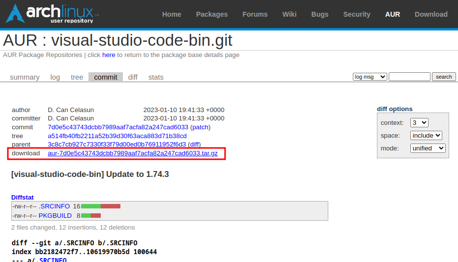

# 錯誤訊息
Visual Studio Code 1.76.1 版本已不會有此問題
更新 Visual Studio Code 後，進入 Dev Containers 出現錯誤 The connection to the terminal's pty host process is unresponsive，且 terminal 無法使用。

點選 Restart pty host 後 terminal 仍無法正常顯示
# 環境
- 作業系統
$ lsb_release -a
LSB Version: n/a
Distributor ID: ManjaroLinux
Description: Manjaro Linux
Release: 22.0.4
Codename: Sikaris- Visual Studio Code 1.75.1 (會出現錯誤的版本)
# 嘗試修正
Visual Studio Code 設定 terminal.integrated.windowsEnableConpty: false，重啟後異常狀況一樣。
# 使用 downgrade 降版
無法降版，可能因為我先把 VSCode 刪除再重新安裝，而重新安裝是最新版的，所以電腦內沒有保留舊版本。
$ sudo downgrade visual-studio-code-bin
Downgrading from A.L.A. is disabled on the stable branch. To override this behavior, set DOWNGRADE_FROM_ALA to 1.
See https://wiki.manjaro.org/index.php/Downgrading_packages for more details.
No results found
Unable to downgrade visual-studio-code-bin# 直接安裝舊版本
# 取得舊版本
從 AUR repository找到使用的套件visual-studio-code-bin，點選 View Changes 查看舊版本。

選擇可以正常的版本; 1.74.3，下載套件。


# 建立 package
解壓縮後進入
$ ls -a1
.
..
code.desktop
code-url-handler.desktop
PKGBUILD
.SRCINFO
visual-studio-code-bin.install
visual-studio-code-bin.sh
visual-studio-code-workspace.xml建立 package
$ makepkg -s
==> Making package: visual-studio-code-bin 1.74.3-1 (廿廿三年二月廿日 (週一) 廿時47分十三秒)
==> Checking runtime dependencies...
==> Checking buildtime dependencies...
==> Retrieving sources...
-> Found code.desktop
-> Found code-url-handler.desktop
-> Found visual-studio-code-workspace.xml
-> Found visual-studio-code-bin.sh
-> Downloading code_x64_1.74.3.tar.gz...
% Total % Received % Xferd Average Speed Time Time Time Current
Dload Upload Total Spent Left Speed
100 134 100 134 0 0 159 0 --:--:-- --:--:-- --:--:-- 159
100 131M 100 131M 0 0 3979k 0 0:00:33 0:00:33 --:--:-- 4091k
==> Validating source files with sha256sums...
code.desktop ... Passed
code-url-handler.desktop ... Passed
visual-studio-code-workspace.xml ... Passed
visual-studio-code-bin.sh ... Passed
==> Validating source_x86_64 files with sha256sums...
code_x64_1.74.3.tar.gz ... Passed
==> Extracting sources...
-> Extracting code_x64_1.74.3.tar.gz with bsdtar
==> Entering fakeroot environment...
==> Starting package()...
==> Tidying install...
-> Removing libtool files...
-> Purging unwanted files...
-> Removing static library files...
-> Stripping unneeded symbols from binaries and libraries...
-> Compressing man and info pages...
==> Checking for packaging issues...
==> Creating package "visual-studio-code-bin"...
-> Generating .PKGINFO file...
-> Generating .BUILDINFO file...
-> Adding install file...
-> Generating .MTREE file...
-> Compressing package...
==> Leaving fakeroot environment.
==> Finished making: visual-studio-code-bin 1.74.3-1 (廿廿三年二月廿日 (週一) 廿時48分二秒)建立 package 後會產生需要的檔案，檢查有沒有產生 visual-studio-code-bin-1.74.3-1-x86_64.pkg.tar.zst。
$ ls -a1
.
..
code.desktop
code-url-handler.desktop
code_x64_1.74.3.tar.gz
pkg
PKGBUILD
src
.SRCINFO
visual-studio-code-bin-1.74.3-1-x86_64.pkg.tar.zst
visual-studio-code-bin.install
visual-studio-code-bin.sh
visual-studio-code-workspace.xml
# 安裝
$ sudo pacman -U visual-studio-code-bin-1.74.3-1-x86_64.pkg.tar.zst
loading packages...
resolving dependencies...
looking for conflicting packages...
Packages (1) visual-studio-code-bin-1.74.3-1
Total Installed Size: 331.05 MiB
:: Proceed with installation? [Y/n] y
(1/1) checking keys in keyring [####################################] 100%
(1/1) checking package integrity [####################################] 100%
(1/1) loading package files [####################################] 100%
(1/1) checking for file conflicts [####################################] 100%
(1/1) checking available disk space [####################################] 100%
:: Processing package changes...
(1/1) installing visual-studio-code-bin [####################################] 100%
==> NOTE: Custom flags should be put directly in: ~/.config/code-flags.conf
Optional dependencies for visual-studio-code-bin
glib2: Needed for move to trash functionality [installed]
libdbusmenu-glib: Needed for KDE global menu [installed]
org.freedesktop.secrets: Needed for settings sync [installed]
icu69: Needed for live share
:: Running post-transaction hooks...
(1/4) Arming ConditionNeedsUpdate...
(2/4) Updating the MIME type database...
(3/4) Refreshing PackageKit...
(4/4) Updating the desktop file MIME type cache...# 注意事項
在 Linux 環境要安裝 visual-studio-code-bin 的版本，才有 Remote Development 套件可以安裝。